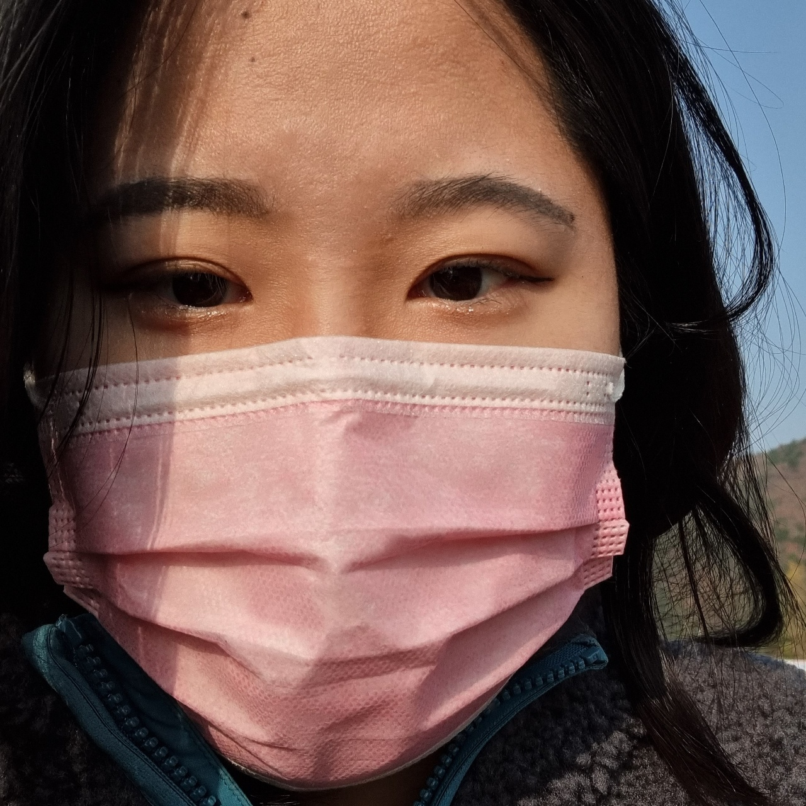

박찬영입니다.
"다른 사람에게 피해를 끼치지는 말자." 라는 생각을 바탕으로 공동체에게 주어진 일에 책임을 가지고 임하는 자세를 가지고
"그래 그럴수 있지." 라는 너그러운(?) 마음으로 세상을 보려고 노력중입니다.
제가 좋아하는 게임의 한 캐릭터는 "과거는 미래를 비추는 거울이다." 라고 말합니다.
우리는 항상 "그때 그랬어야했는데, 그러지 말걸..." 등등 후회를 하고 삽니다. 인간이라면 당연히 평생을 후회라는 동반자와 함께 하겠지만,
미래의 내가 과거의 나를 떠올릴때 큰 괴로움과 죄책감을 가지지 않았으면 좋겠습니다. 그러기 위해서는 최선을 다해 현재를 살아가야겠죠.